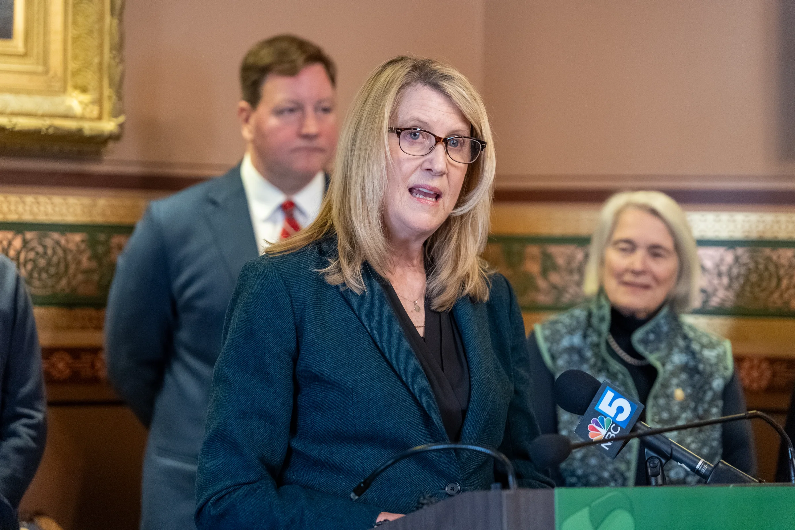
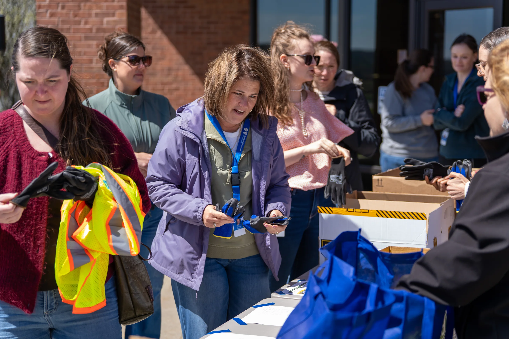
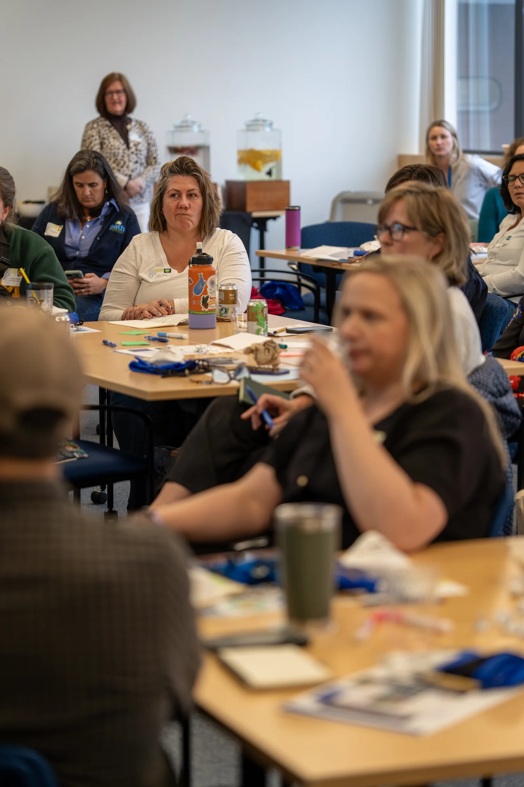

Documentary series · 2023–2026
Photograph the people doing the work.
This series spans public programs, press conferences, races, workplace wellness, and community events. The organization changes. The approach does not.
Blue Cross Vermont community work





Credit union community work